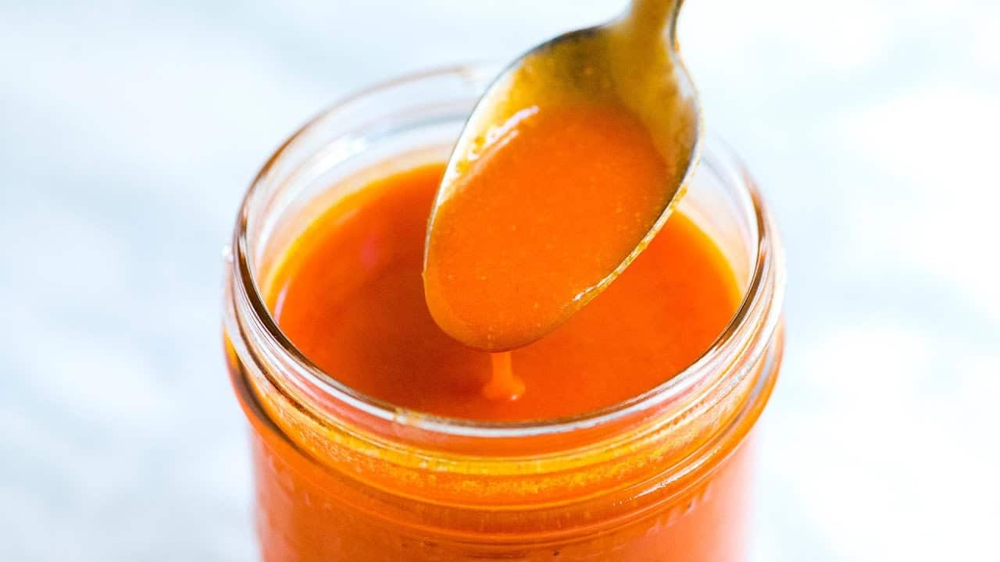

NY Buffalo Sauce

The perfect sauce to go with your wings!
Use this sauce for dipping your wings, or coat your wings a few minutes before they are ready.
Ingredients
- 50ml tabasco
- 60gr butter
- 1,5 tbsp white wine vinegar
- pinch cayennepepper
- 1 tsp garlicpowder
- 1 tsp worcestersauce
Instructions
Make the sauce by mixing all the ingredients in a small saucepan. Put the pan over a small heat until all the butter has melted and all the ingredients are mixed.